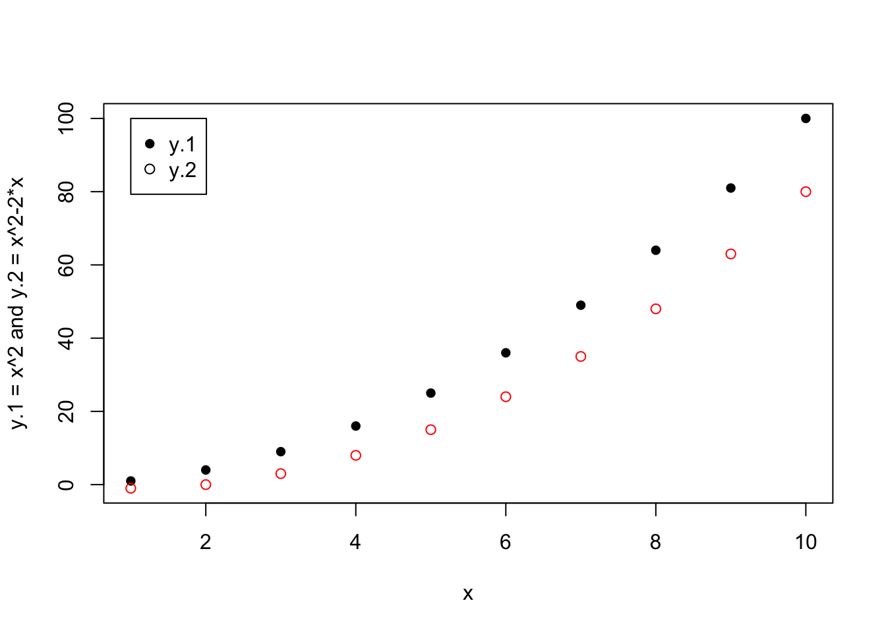

In R, you can choose different ways to plot your data and results. By default, R ships with built-in graphical functions. Other functions, or entirely different paradigms, can be enabled using different packages. Here we give a brief overview of the standard plotting functions that are useful for quick data exploration. These are also referred to as R “base graphics” as no extra package is required.
R base graphics are drawn interactively: you can start with a plot, and then overlay other elements on the existing plot.
The function plot(x, y, ...) is the most basic way to plot points defined by their x- and y-coordinates. Here, x and y are vectors of equal length containing the x- and y-coordinates of the point to be plotted. For example,
# generate data
x <- 1:30 # creates a vector of 30 values that we use as x-coordinates
y <- rnorm(30, mean = x) # creates a vector of 30 values that we use as y-coordinates; each values is drawn from normal distribution with with an increasing mean value
plot(y) # if no x-vector is given the defaul x = (1, 2, 3, ...) is used
plot(x, y) # this plot produces an identical result
# there are many different option one can add to the plot command
plot(x, y, type = "l") # using lines instead of points
plot(x, y, type = "b") # using both lines and points
plot(x, y, type = "b", pch = 4) # change the type of point
plot(x, y, type = "b", pch = 4, col = "blue") # change color
abline(a = 0, b = 1) # add a line to the same plot by specifying its intercept a and slope b,
abline(h = 20) # adding a horizontal line by setting a y-value h
abline(v = 10) # adding a vertical line by setting an x-value v
plot(x, y, col = "orange", xlab = "my x-label", ylab = "a y-label")
plot(x, y2, xlim = c(1,35), ylim = c(1,40)) # set plot rangesWe can plot the graphs of functions using the command curve(expr, from, to, ...), where expr is a mathematical expression containing an argument x or function name, and from and to defines the range of x for which the function is plotted. This is a useful tool for visually exploring the shape of a function.
curve(exp, from = -3, to = 3) # plot of the exponential function in the interval (-3, 3)
abline(v = 0) # adding a vertical line at x = 0
logistic <- function(n, r, k){# definition of the user-defined function giving the population growth rate of a logistically growing population as a function the current population size n, the intrinsic growth rate r and the carrying capacity k
n*r*(1-n/k)
}
curve(logistic(x , r = 1, k = 2), from = 0, to =2.5) # plot of the function logistic as a function of the population size n = x
abline(h = 0) # adding a horizontal line at y = 0The plotting command matplot(x, y, ...) in R is an easy way to superimpose several data series. Here, x is a vector containing the values for the x-axes and y is a matrix containing the data as a function of x. Note, that matplot(x, y, ...) plots each column of y as separate data series.
x <- 1:10 # creates a vector of length 10, this will become the x-axes
y.1 <- x^2 # two more vectors of length 10
y.2 <- x^2 - 2*x
matplot(x, cbind(y.1, y.2), pch = c(16, 1), xlab = "x", ylab = "y.1 = x^2 and y.2 = x^2-2*x")
legend(1, 100, legend = c("y.1","y.2"), pch = c(16, 1)) 
In the following example, the variable x is given by the first column of a matrix while the actual data are taken from the second and third column of that same matrix.
x <- 1:10 # creates a vector of length 10, this will become the x-axes
y.1 <- x^2 # two more vectors of length 10
y.2 <- x^2 - 2*x
data_matrix <- cbind(x, y.1, y.2) # combine the above three vectors into a matrix
data_matrix
matplot(data_matrix[ , 1], data_matrix[ , 2-3], pch = c(16, 1), xlab = "x", ylab = "y.1 = x^2 and y.2 = x^2-2*x")
legend(1, 100, legend = c("y.1","y.2"), pch = c(16, 1)) The function hist(x, ...) is used to produce simple histograms, where x is a vector of values for which the histogram is desired. Histograms show the abundance or frequency of data falling in certain discrete classes.
# generate data, drawn from Poisson distribution with mean 3
d1 <- rpois(100, lambda = 3)
# basic histogram
hist(d1) # without further options R decides how bin the data
# specify desired number of bins
hist(d1, breaks = 4) # four break points results in five bins
# specify bin edges
hist(d1, breaks = c(0, 1, 3, 5, 7, 11, 21)) # manually defining bins
# use frequencies (default if bins have equal size)
hist(d1, freq = TRUE)
# use density
hist(d1, freq = FALSE)
# get the histogram, but without plotting it
z <- hist(d1, plot = FALSE)
# access elements of the histogram
z$counts # counts per bin
z$mids # midpoints of the binsA bar plot is used to represent data for discrete groups. Here are some examples using the function barplot(height, ...):
data(rivers) # load data on length of North American rivers
barplot(rivers, xlab = "rivers", ylab = "length")
barplot(order(rivers), xlab = "rivers", ylab = "length")
barplot(rivers, xlab = "rivers", ylab = "length", horiz = TRUE) # horizontal
data(iris) # load iris data set
structure(iris) # inspect the iris data set
# color by group level
barplot(height = iris$Petal.Width, beside = TRUE, col = iris$Species, xlab = "species")Box plots are used to show the range of a distribution, and the location of the bulk of its mass. Use the function boxplot(x, ...) where x specifies the data from which the boxplot is to be produced.
data(iris)
# set specific colors
boxplot(iris$Petal.Width ~ iris$Species, col = c("red", "green", "blue"))